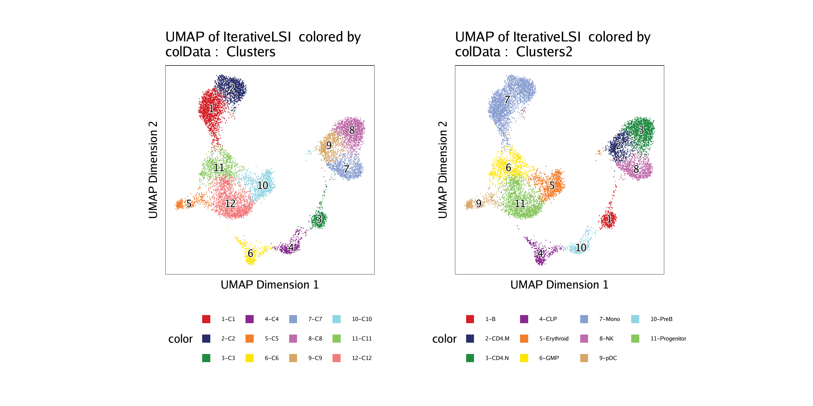
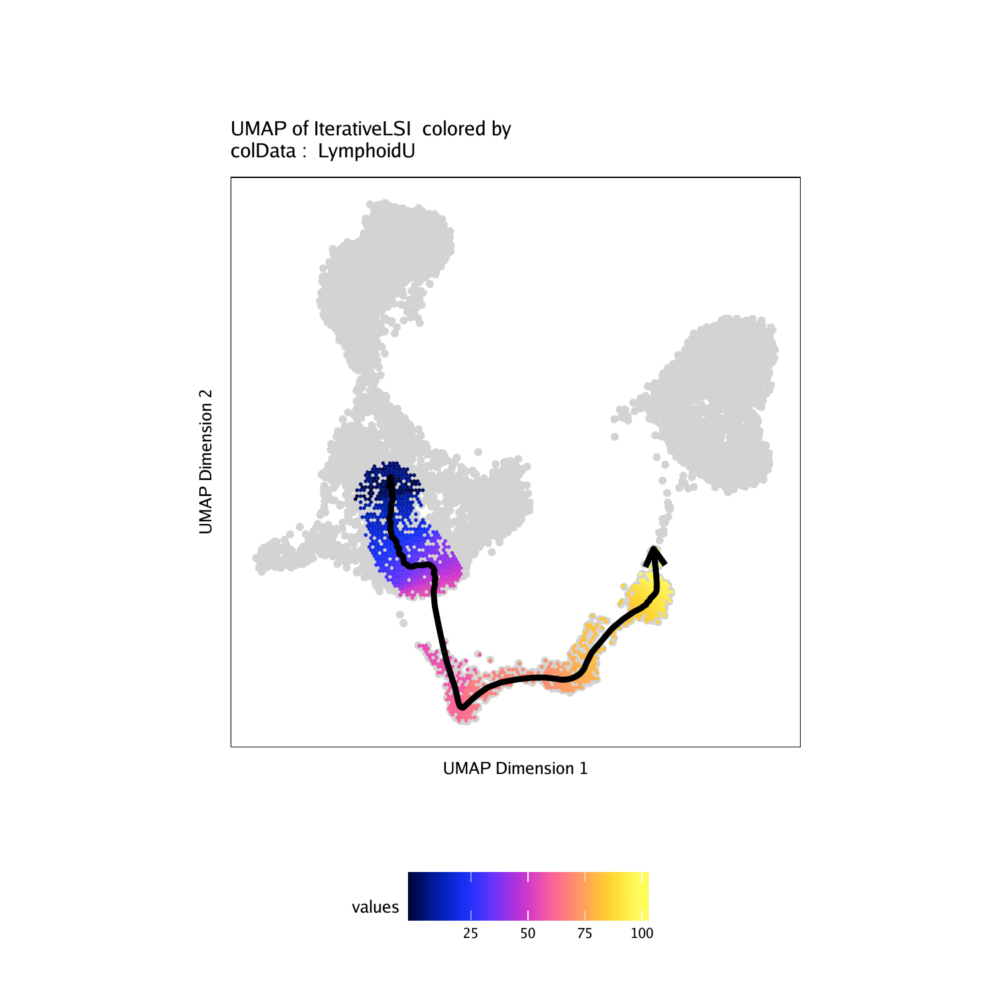
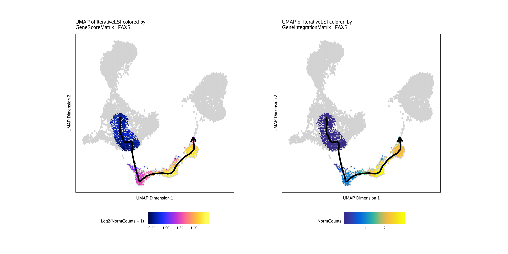
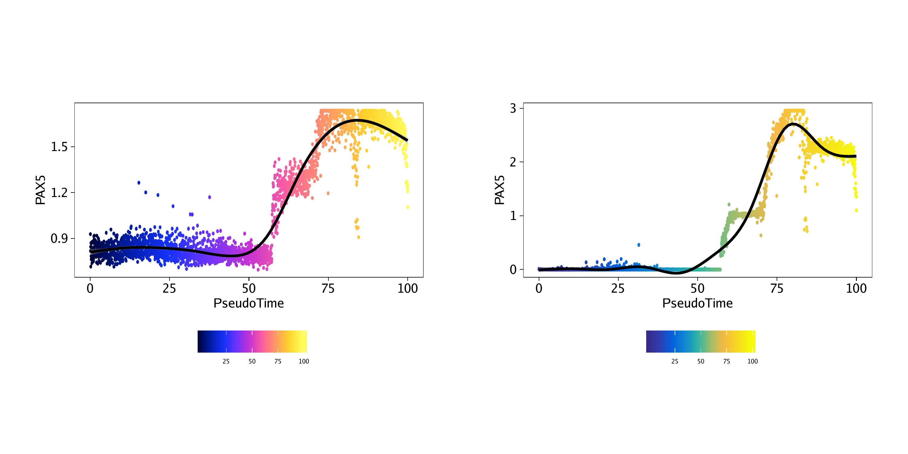
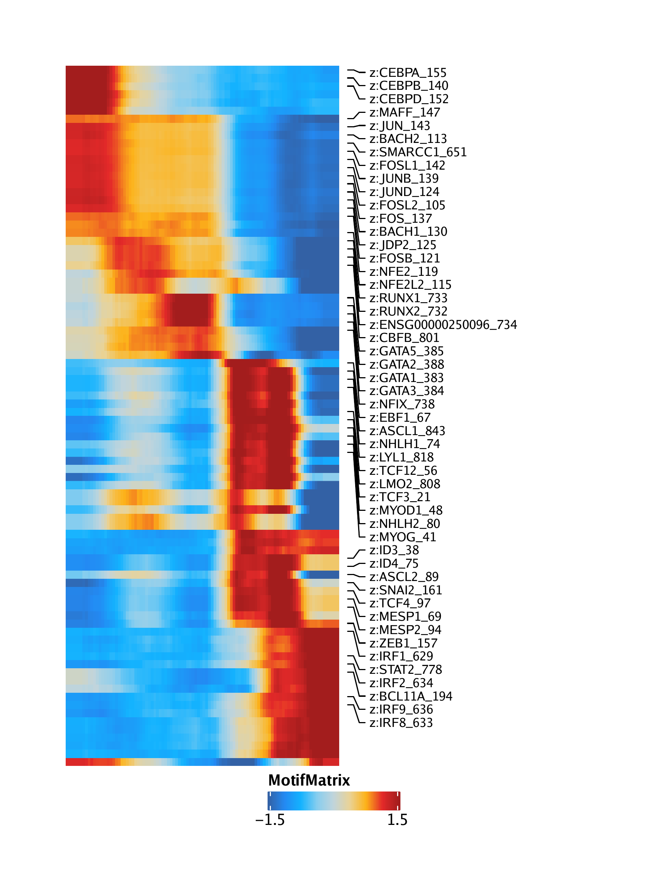
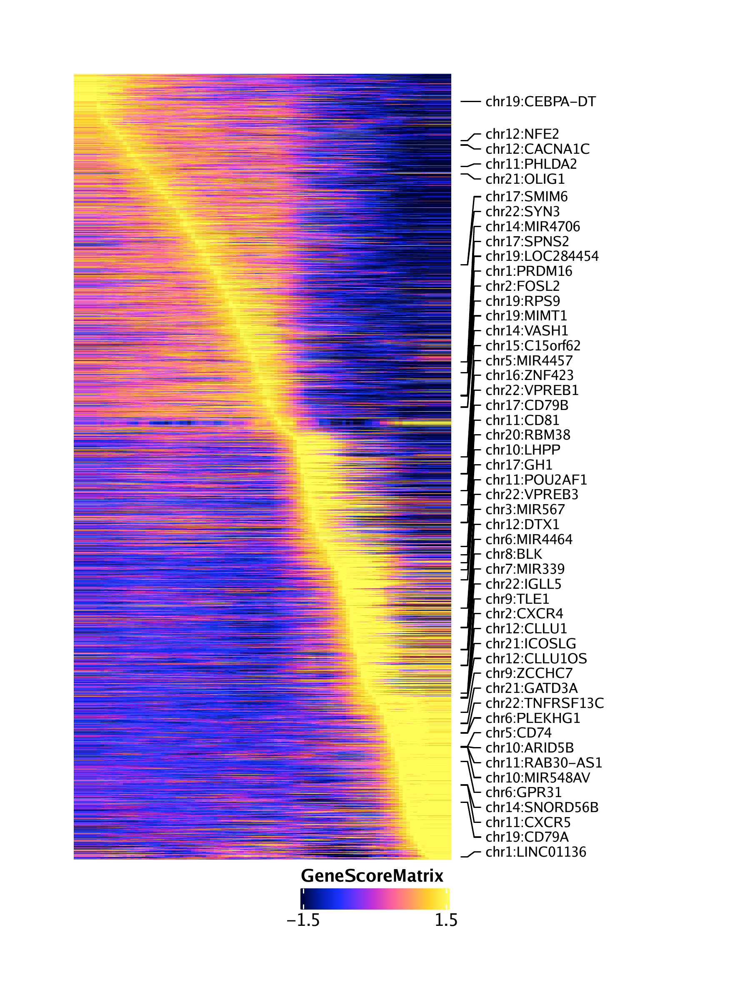
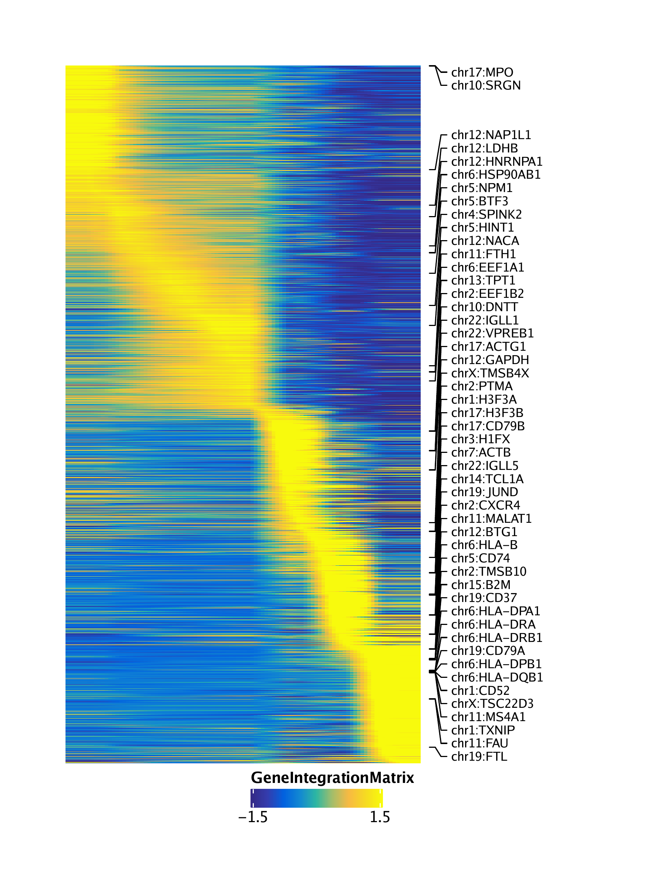
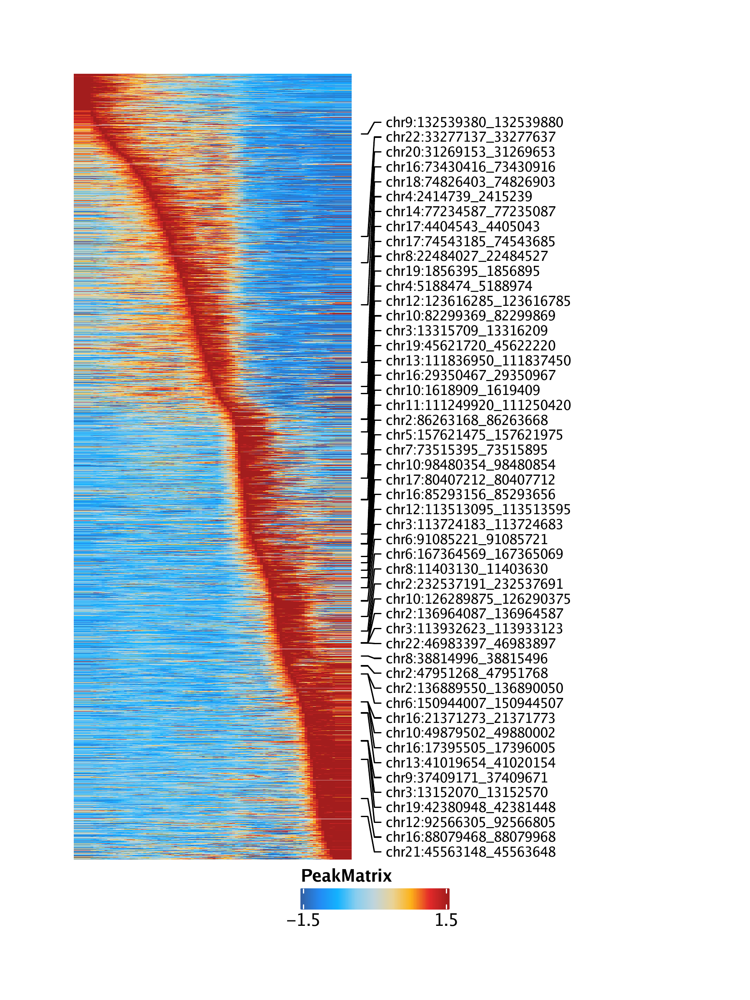
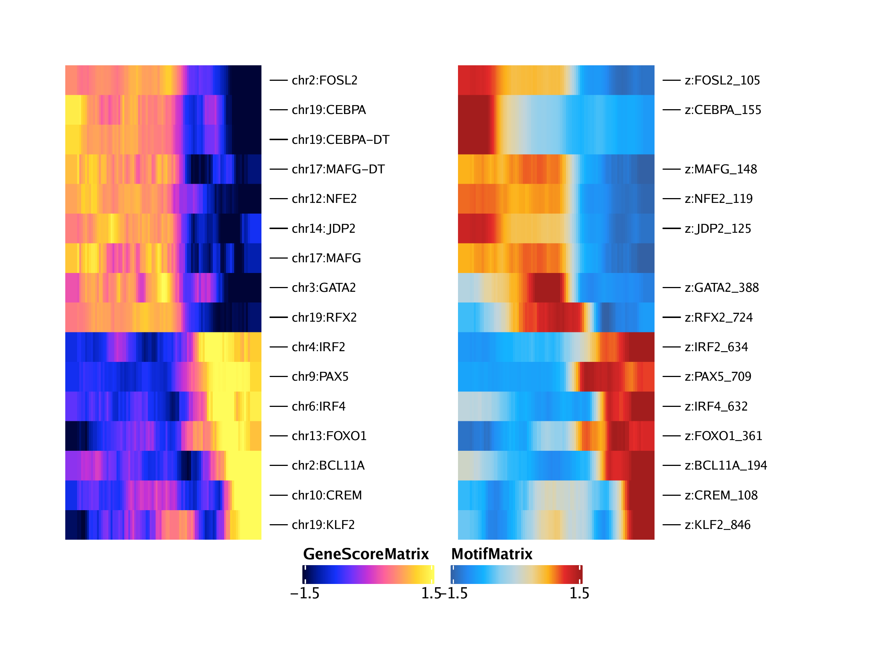
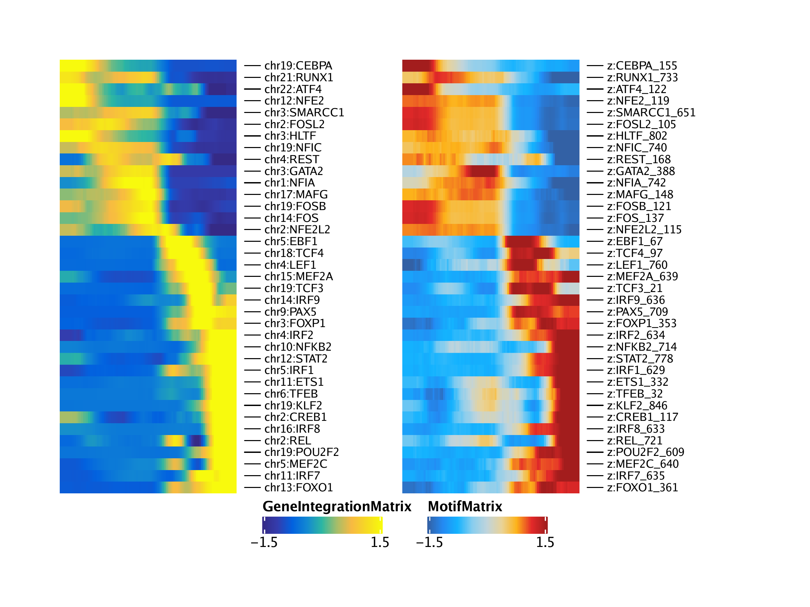

16.2 Lymphoid Trajectory - B Cell Cifferentiation
As a second example of a trajectory, we will create a B cell trajectory from progenitor cells, through the common lymphoid progenitor and pre-B cell all the way to fully differentiated B cells. Because this analysis is essentially repeated from the monocyte trajectory in the previous section, we do not provide explanations for the code snippets. If you are trying to learn how to perform trajectory analysis, check out the monocyte trajectory section in this chapter instead.
p1 <- plotEmbedding(ArchRProj = projHeme5, colorBy = "cellColData", name = "Clusters", embedding = "UMAP")## ArchR logging to : ArchRLogs/ArchR-plotEmbedding-15e1340853c58-Date-2020-04-15_Time-15-04-41.log
## If there is an issue, please report to github with logFile!
## Getting UMAP Embedding
## ColorBy = cellColData
## Plotting Embedding
## 1
## ArchR logging successful to : ArchRLogs/ArchR-plotEmbedding-15e1340853c58-Date-2020-04-15_Time-15-04-41.log
p2 <- plotEmbedding(ArchRProj = projHeme5, colorBy = "cellColData", name = "Clusters2", embedding = "UMAP")## ArchR logging to : ArchRLogs/ArchR-plotEmbedding-15e1326401e05-Date-2020-04-15_Time-15-04-42.log
## If there is an issue, please report to github with logFile!
## Getting UMAP Embedding
## ColorBy = cellColData
## Plotting Embedding
## 1
## ArchR logging successful to : ArchRLogs/ArchR-plotEmbedding-15e1326401e05-Date-2020-04-15_Time-15-04-42.log

16.2.1 Pseudo-time UMAPs and individual feature plots
## [1] “Progenitor” “CLP” “PreB” “B”
projHeme5 <- addTrajectory(
ArchRProj = projHeme5,
name = "LymphoidU",
groupBy = "Clusters2",
trajectory = trajectory,
embedding = "UMAP",
force = TRUE
)## ArchR logging to : ArchRLogs/ArchR-addTrajectory-15e1351d16b68-Date-2020-04-15_Time-15-04-55.log
## If there is an issue, please report to github with logFile!
## Filtering outliers
## Initial Alignment Before Spline Fit
## Spline Fit
## KNN to Spline
## Aligning cells not in trajectory
## ArchR logging successful to : ArchRLogs/ArchR-addTrajectory-15e1351d16b68-Date-2020-04-15_Time-15-04-55.log
## [1] 87.630792 81.913303 84.342302 81.763827 83.632287 4.073244
p <- plotTrajectory(projHeme5, trajectory = "LymphoidU", colorBy = "cellColData", name = "LymphoidU")## ArchR logging to : ArchRLogs/ArchR-plotTrajectory-15e1377b52455-Date-2020-04-15_Time-15-04-56.log
## If there is an issue, please report to github with logFile!
## Plotting
## Warning: Removed 7575 rows containing non-finite values (stat_summary_hex).
## Plotting Trajectory
## Adding Inferred Arrow Trajectory to Plot
## ArchR logging successful to : ArchRLogs/ArchR-plotTrajectory-15e1377b52455-Date-2020-04-15_Time-15-04-56.log
## Warning: Removed 7575 rows containing non-finite values (stat_summary_hex).

To save an editable vectorized version of this plot, we use plotPDF().
plotPDF(p, name = "Plot-LymphoidU-Traj-UMAP.pdf", ArchRProj = projHeme5, addDOC = FALSE, width = 5, height = 5)## [1] “plotting ggplot!”
## Warning: Removed 7575 rows containing non-finite values (stat_summary_hex).
## Warning: Removed 7575 rows containing non-finite values (stat_summary_hex).
## [1] “plotting ggplot!”
##geom_smooth()using method = ‘gam’ and formula ‘y ~ s(x, bs = “cs”)’
##geom_smooth()using method = ‘gam’ and formula ‘y ~ s(x, bs = “cs”)’
## [1] 0
p1 <- plotTrajectory(projHeme5, trajectory = "LymphoidU", colorBy = "GeneScoreMatrix", name = "PAX5", continuousSet = "horizonExtra")## Getting ImputeWeights
## ArchR logging to : ArchRLogs/ArchR-plotTrajectory-15e13576dc585-Date-2020-04-15_Time-15-05-20.log
## If there is an issue, please report to github with logFile!
## Getting Matrix Values…
## Getting Matrix Values…
##
## Imputing Matrix
## Using weights on disk
## Using weights on disk
## Plotting
## Warning: Removed 7575 rows containing non-finite values (stat_summary_hex).
## Plotting Trajectory
## Adding Inferred Arrow Trajectory to Plot
## ArchR logging successful to : ArchRLogs/ArchR-plotTrajectory-15e13576dc585-Date-2020-04-15_Time-15-05-20.log
p2 <- plotTrajectory(projHeme5, trajectory = "LymphoidU", colorBy = "GeneIntegrationMatrix", name = "PAX5", continuousSet = "blueYellow")## Getting ImputeWeights
## ArchR logging to : ArchRLogs/ArchR-plotTrajectory-15e13ed9c20a-Date-2020-04-15_Time-15-05-27.log
## If there is an issue, please report to github with logFile!
## Getting Matrix Values…
## Getting Matrix Values…
##
## Imputing Matrix
## Using weights on disk
## Using weights on disk
## Plotting
## Warning: Removed 7575 rows containing non-finite values (stat_summary_hex).
## Plotting Trajectory
## Adding Inferred Arrow Trajectory to Plot
## ArchR logging successful to : ArchRLogs/ArchR-plotTrajectory-15e13ed9c20a-Date-2020-04-15_Time-15-05-27.log
## Warning: Removed 7575 rows containing non-finite values (stat_summary_hex).
## Warning: Removed 7575 rows containing non-finite values (stat_summary_hex).

##
geom_smooth()using method = ‘gam’ and formula ‘y ~ s(x, bs = “cs”)’
##geom_smooth()using method = ‘gam’ and formula ‘y ~ s(x, bs = “cs”)’

16.2.2 Pseudo-time heatmaps
trajMM <- getTrajectory(ArchRProj = projHeme5, name = "LymphoidU", useMatrix = "MotifMatrix", log2Norm = FALSE)## Creating Trajectory Group Matrix..
## Some values are below 0, this could be a DeviationsMatrix in which scaleTo should be set = NULL.
## Continuing without depth normalization!
## Smoothing…
## ArchR logging to : ArchRLogs/ArchR-plotTrajectoryHeatmap-15e133830d097-Date-2020-04-15_Time-15-06-14.log
## If there is an issue, please report to github with logFile!
## useSeqnames is NULL or greater than 1 with a Sparse.Assays.Matrix trajectory input.
## 2020-04-15 15:06:15 :
## force=FALSE thus continuing with subsetting useSeqnames = z
## 2020-04-15 15:06:15 :
## Removing rows with NA values…
## 2020-04-15 15:06:15 :
## Preparing Main Heatmap..
## ArchR logging successful to : ArchRLogs/ArchR-plotTrajectoryHeatmap-15e133830d097-Date-2020-04-15_Time-15-06-14.log

trajGSM <- getTrajectory(ArchRProj = projHeme5, name = "LymphoidU", useMatrix = "GeneScoreMatrix", log2Norm = TRUE)## Creating Trajectory Group Matrix..
## Smoothing…
## ArchR logging to : ArchRLogs/ArchR-plotTrajectoryHeatmap-15e13357a3282-Date-2020-04-15_Time-15-06-36.log
## If there is an issue, please report to github with logFile!
## Preparing Main Heatmap..
## ArchR logging successful to : ArchRLogs/ArchR-plotTrajectoryHeatmap-15e13357a3282-Date-2020-04-15_Time-15-06-36.log

trajGIM <- getTrajectory(ArchRProj = projHeme5, name = "LymphoidU", useMatrix = "GeneIntegrationMatrix", log2Norm = FALSE)## Creating Trajectory Group Matrix..
## Smoothing…
## ArchR logging to : ArchRLogs/ArchR-plotTrajectoryHeatmap-15e131325dad9-Date-2020-04-15_Time-15-07-06.log
## If there is an issue, please report to github with logFile!
## Preparing Main Heatmap..
## ArchR logging successful to : ArchRLogs/ArchR-plotTrajectoryHeatmap-15e131325dad9-Date-2020-04-15_Time-15-07-06.log

trajPM <- getTrajectory(ArchRProj = projHeme5, name = "LymphoidU", useMatrix = "PeakMatrix", log2Norm = TRUE)## Creating Trajectory Group Matrix..
## Smoothing…
## ArchR logging to : ArchRLogs/ArchR-plotTrajectoryHeatmap-15e1351d7cd4d-Date-2020-04-15_Time-15-07-48.log
## If there is an issue, please report to github with logFile!
## Preparing Main Heatmap..
## ArchR logging successful to : ArchRLogs/ArchR-plotTrajectoryHeatmap-15e1351d7cd4d-Date-2020-04-15_Time-15-07-48.log

To save an editable vectorized version of this plot, we use plotPDF().
plotPDF(p1, p2, p3, p4, name = "Plot-LymphoidU-Traj-Heatmaps.pdf", ArchRProj = projHeme5, addDOC = FALSE, width = 6, height = 8)## [1] 0
16.2.3 Integrative pseudo-time analyses
## ArchR logging to : ArchRLogs/ArchR-correlateTrajectories-15e133e72f66-Date-2020-04-15_Time-15-08-26.log
## If there is an issue, please report to github with logFile!
## Found 16 Correlated Pairings!
## 2020-04-15 15:08:47 :
## [1] “CREM” “NFE2” “FOXO1” “JDP2” “MAFG” “MAFG” “RFX2” “KLF2”
## [9] “CEBPA” “CEBPA” “FOSL2” “BCL11A” “GATA2” “IRF2” “IRF4” “PAX5”
## DataFrame with 16 rows and 12 columns
## idx1 idx2 matchname1 matchname2 name1 name2
##
## 1 2503 978 CREM CREM chr10:CREM z:CREM_108
## 2 5181 989 NFE2 NFE2 chr12:NFE2 z:NFE2_119
## 3 5958 1231 FOXO1 FOXO1 chr13:FOXO1 z:FOXO1_361
## 4 6721 995 JDP2 JDP2 chr14:JDP2 z:JDP2_125
## 5 10077 1018 MAFG MAFG chr17:MAFG z:MAFG_148
## … … … … … … …
## 12 12398 1064 BCL11A BCL11A chr2:BCL11A z:BCL11A_194
## 13 15802 1258 GATA2 GATA2 chr3:GATA2 z:GATA2_388
## 14 17102 1504 IRF2 IRF2 chr4:IRF2 z:IRF2_634
## 15 18161 1502 IRF4 IRF4 chr6:IRF4 z:IRF4_632
## 16 21499 1579 PAX5 PAX5 chr9:PAX5 z:PAX5_709
## Correlation VarAssay1 VarAssay2 TStat
##
## 1 0.592000045415225 0.812340554330436 0.875287356321839 7.27165360687288
## 2 0.762361661991419 0.993427595451204 0.989655172413793 11.6618731859923
## 3 0.658467426103544 0.855580057940935 0.879310344827586 8.66119456905554
## 4 0.649844641802372 0.819518311929779 0.991954022988506 8.46390278863183
## 5 0.502090536187102 0.886798979547715 0.935632183908046 5.74740534991767
## … … … … …
## 12 0.609993999834133 0.867557400441043 0.968965517241379 7.62062915462215
## 13 0.549172289236984 0.945561464954382 0.986781609195402 6.5052874492361
## 14 0.643963832332729 0.828685086695205 0.970114942528736 8.33261518735298
## 15 0.536406221175027 0.8282526916591 0.952873563218391 6.2919464214338
## 16 0.803092200275283 0.978942361741687 0.962068965517241 13.3425248033796
## Pval FDR
##
## 1 8.76476821331047e-11 4.6198810517901e-09
## 2 3.15171893793416e-20 1.02998174891688e-17
## 3 9.66043618744996e-14 1.43501388457211e-11
## 4 2.57124018372512e-13 3.50117205017237e-11
## 5 1.02530728526766e-07 2.83957983750399e-06
## … … …
## 12 1.62079037573397e-11 1.10348811414554e-09
## 13 3.29134663353072e-09 1.25071172074167e-07
## 14 4.92446003514203e-13 6.18966745955545e-11
## 15 8.81247545774464e-09 2.93869079550097e-07
## 16 9.15917087670499e-24 3.74152130313399e-21
trajGSM2 <- trajGSM[corGSM_MM[[1]]$name1, ]
trajMM2 <- trajMM[corGSM_MM[[1]]$name2, ]
trajCombined <- trajGSM2
assay(trajCombined) <- t(apply(assay(trajGSM2), 1, scale)) + t(apply(assay(trajMM2), 1, scale))
combinedMat <- plotTrajectoryHeatmap(trajCombined, returnMat = TRUE, varCutOff = 0)## ArchR logging to : ArchRLogs/ArchR-plotTrajectoryHeatmap-15e136c64f4ee-Date-2020-04-15_Time-15-08-47.log
## If there is an issue, please report to github with logFile!
## Preparing Main Heatmap..
## ArchR logging successful to : ArchRLogs/ArchR-plotTrajectoryHeatmap-15e136c64f4ee-Date-2020-04-15_Time-15-08-47.log
rowOrder <- match(rownames(combinedMat), rownames(trajGSM2))
ht1 <- plotTrajectoryHeatmap(trajGSM2, pal = paletteContinuous(set = "horizonExtra"), varCutOff = 0, rowOrder = rowOrder)## ArchR logging to : ArchRLogs/ArchR-plotTrajectoryHeatmap-15e1344a2d751-Date-2020-04-15_Time-15-08-47.log
## If there is an issue, please report to github with logFile!
## Preparing Main Heatmap..
## ArchR logging successful to : ArchRLogs/ArchR-plotTrajectoryHeatmap-15e1344a2d751-Date-2020-04-15_Time-15-08-47.log
ht2 <- plotTrajectoryHeatmap(trajMM2, pal = paletteContinuous(set = "solarExtra"), varCutOff = 0, rowOrder = rowOrder)## ArchR logging to : ArchRLogs/ArchR-plotTrajectoryHeatmap-15e1365304b53-Date-2020-04-15_Time-15-08-48.log
## If there is an issue, please report to github with logFile!
## useSeqnames is NULL or greater than 1 with a Sparse.Assays.Matrix trajectory input.
## 2020-04-15 15:08:49 :
## force=FALSE thus continuing with subsetting useSeqnames = z
## 2020-04-15 15:08:49 :
## Preparing Main Heatmap..
## ArchR logging successful to : ArchRLogs/ArchR-plotTrajectoryHeatmap-15e1365304b53-Date-2020-04-15_Time-15-08-48.log

## ArchR logging to : ArchRLogs/ArchR-correlateTrajectories-15e134c10b516-Date-2020-04-15_Time-15-09-05.log
## If there is an issue, please report to github with logFile!
## Found 37 Correlated Pairings!
## 2020-04-15 15:09:20 :
## [1] “NFIA” “NFKB2” “IRF7” “ETS1” “NFE2” “STAT2” “FOXO1”
## [8] “IRF9” “FOS” “MEF2A” “IRF8” “MAFG” “TCF4” “TCF3”
## [15] “NFIC” “KLF2” “CEBPA” “POU2F2” “FOSB” “FOSL2” “REL”
## [22] “NFE2L2” “CREB1” “RUNX1” “ATF4” “SMARCC1” “FOXP1” “GATA2”
## [29] “HLTF” “REST” “LEF1” “IRF2” “MEF2C” “IRF1” “EBF1”
## [36] “TFEB” “PAX5”
## DataFrame with 37 rows and 12 columns
## idx1 idx2 matchname1 matchname2 name1 name2
##
## 1 680 1612 NFIA NFIA chr1:NFIA z:NFIA_742
## 2 2428 1584 NFKB2 NFKB2 chr10:NFKB2 z:NFKB2_714
## 3 2625 1505 IRF7 IRF7 chr11:IRF7 z:IRF7_635
## 4 3790 1202 ETS1 ETS1 chr11:ETS1 z:ETS1_332
## 5 4287 989 NFE2 NFE2 chr12:NFE2 z:NFE2_119
## … … … … … … …
## 33 14165 1510 MEF2C MEF2C chr5:MEF2C z:MEF2C_640
## 34 14287 1499 IRF1 IRF1 chr5:IRF1 z:IRF1_629
## 35 14558 937 EBF1 EBF1 chr5:EBF1 z:EBF1_67
## 36 15164 902 TFEB TFEB chr6:TFEB z:TFEB_32
## 37 17354 1579 PAX5 PAX5 chr9:PAX5 z:PAX5_709
## Correlation VarAssay1 VarAssay2 TStat
##
## 1 0.776554032919386 0.895435729261868 0.955747126436782 12.2013882485613
## 2 0.842642341279197 0.893070265039514 0.88735632183908 15.4914421620131
## 3 0.829368082571345 0.919144132035912 0.91551724137931 14.6953411117392
## 4 0.85457028998599 0.947529702704156 0.901724137931034 16.2896821299438
## 5 0.710070464598055 0.928874791677867 0.989655172413793 9.98300419241652
## … … … … …
## 33 0.65886205886934 0.990860706413634 0.904597701149425 8.67036514488553
## 34 0.852573236159675 0.977151766034084 0.981609195402299 16.1498641717228
## 35 0.947958169110169 0.986344820170959 0.992528735632184 29.4737987999312
## 36 0.71455800087286 0.934842212784259 0.842528735632184 10.1114979100535
## 37 0.835610609654717 0.968066232998226 0.962068965517241 15.0587807907066
## Pval FDR
##
## 1 2.24403341264388e-21 3.40224420626652e-20
## 2 4.28486739529724e-28 1.38888805226876e-26
## 3 1.61521163596779e-26 4.05409887519786e-25
## 4 1.21844806414286e-29 5.72670590147145e-28
## 5 1.31753444224449e-16 1.51034436062174e-15
## … … …
## 33 9.23012667696911e-14 7.74671346102765e-13
## 34 2.25997962853195e-29 9.23643848182623e-28
## 35 1.65431752552523e-50 3.88764618498429e-48
## 36 6.93337834458196e-17 8.04614277025561e-16
## 37 3.05084830514743e-27 8.43469825540759e-26
trajGIM2 <- trajGIM[corGIM_MM[[1]]$name1, ]
trajMM2 <- trajMM[corGIM_MM[[1]]$name2, ]
trajCombined <- trajGIM2
assay(trajCombined) <- t(apply(assay(trajGIM2), 1, scale)) + t(apply(assay(trajMM2), 1, scale))
combinedMat <- plotTrajectoryHeatmap(trajCombined, returnMat = TRUE, varCutOff = 0)## ArchR logging to : ArchRLogs/ArchR-plotTrajectoryHeatmap-15e131cd6b30f-Date-2020-04-15_Time-15-09-21.log
## If there is an issue, please report to github with logFile!
## Preparing Main Heatmap..
## ArchR logging successful to : ArchRLogs/ArchR-plotTrajectoryHeatmap-15e131cd6b30f-Date-2020-04-15_Time-15-09-21.log
rowOrder <- match(rownames(combinedMat), rownames(trajGIM2))
ht1 <- plotTrajectoryHeatmap(trajGIM2, pal = paletteContinuous(set = "blueYellow"), varCutOff = 0, rowOrder = rowOrder)## ArchR logging to : ArchRLogs/ArchR-plotTrajectoryHeatmap-15e137c439868-Date-2020-04-15_Time-15-09-21.log
## If there is an issue, please report to github with logFile!
## Preparing Main Heatmap..
## ArchR logging successful to : ArchRLogs/ArchR-plotTrajectoryHeatmap-15e137c439868-Date-2020-04-15_Time-15-09-21.log
ht2 <- plotTrajectoryHeatmap(trajMM2, pal = paletteContinuous(set = "solarExtra"), varCutOff = 0, rowOrder = rowOrder)## ArchR logging to : ArchRLogs/ArchR-plotTrajectoryHeatmap-15e13755647e8-Date-2020-04-15_Time-15-09-22.log
## If there is an issue, please report to github with logFile!
## useSeqnames is NULL or greater than 1 with a Sparse.Assays.Matrix trajectory input.
## 2020-04-15 15:09:23 :
## force=FALSE thus continuing with subsetting useSeqnames = z
## 2020-04-15 15:09:23 :
## Preparing Main Heatmap..
## ArchR logging successful to : ArchRLogs/ArchR-plotTrajectoryHeatmap-15e13755647e8-Date-2020-04-15_Time-15-09-22.log
